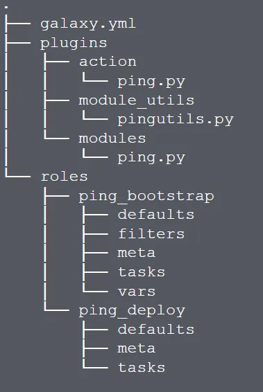
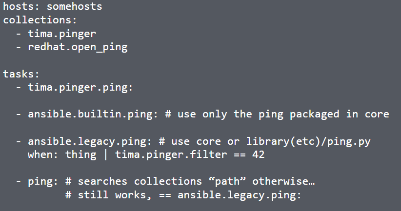

The Future of Ansible Content Delivery
The Future of Ansible Content Delivery
Everyday, I'm in awe of what Ansible has grown to be. The incredible growth of the community and viral adoption of the technology has resulted in a content management challenge for the project.
I don't want to echo a lot of what's been said by our dear friend Jan-Piet Mens or our incredible Community team, but give me a moment to take a shot at it.
Our main challenge is rooted in the ability to scale. The volume of pull requests and issues we see day to day severely outweigh the ability of the Ansible community to keep up with that rate of change.
As a result, we are embarking on a journey. This journey is one that we know that the community, both our content creators and content consumers, will be interested in hearing about.
This New World Order (tongue in cheek), as we've been calling it, is a model that will allow for us to empower the community of contributors of Ansible content (read: modules, plugins, and roles) to provide their content at their own pace.
To do this, we have made some changes to how Ansible leverages content that is not "shipped" with it. In short, Ansible content will not have to be a part of a milestone Core release of the Engine itself. We will be leveraging a delivery process and content structure/format that helps alleviate a lot of the ambiguity and pain that is currently there due to tying plugins to the Core Engine.
The cornerstone of this journey is something you may have heard rumblings of out in the interwebs. This thing is called a Ansible Content Collection, or Collection(s), for short.
To create Ansible Content Collections, we took a look at a lot of things already in practice. We looked at other tools, other packaging formats, delivery engines, repositories, and ultimately, ourselves. In all of that investigation we feel we have come up with a pretty sound spec. Below we cover some details of that.
A Collection is a strict project/directory structure for Ansible Content. Similar to the role directory structure; we are now highlighting what is important to Ansible Playbook execution. Here's a graphic of that spec, created by my teammate, Tim Appnel.

As you can see, this structure does look very similar to roles. There are some slight differences though. Notice that the roles directory no longer contains a library folder? The idea here is that a Collection itself is the true encapsulation of every piece of content relevant to it, and the playbook that is executing that content. So we've taken the libraries out of the various roles that could live in a collection, and placed them at the top level in the plugins directory. There, all types of plugins (yes modules are there because modules are actually plugins) will be usable by the roles and ultimately all playbooks that could potentially call them. Because this content will be "installed" in a location that the Engine is aware of, and will know to look for content that is being called in the playbook.
Also, with these changes, we have introduced some namespacing concepts into playbooks as well. Here's another graphic, by Tim, that is a snippet out of a playbook that highlights that namespacing.

So what we've got here is a very simple playbook. In this playbook we have highlighted the list of Collections that we're interested in using. For each task, we are using the FQCN (Fully Qualified Collection Namespace) path to the module. Of course, we still want to make this simple. So playbook creators won't have to always fully qualify their content path. As you see in the fourth task, creators can still use the shorthand name of a module. Ansible will search the path of collections in a first come first serve approach, as defined in Ansible configuration or within the play itself.
That's about all I've got for going into Collections.
Happy Automating folks!